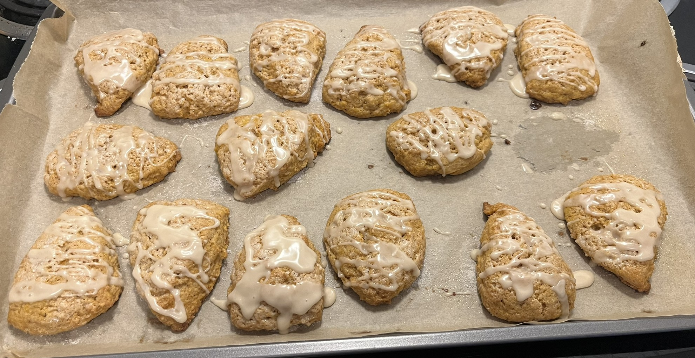

Gluten Free Pumpkin Scones

Description
These pumpkin scones are easy and delicious! They can be made as written,
or the ball of dough can be divided in two to make smaller scones. Recipe
credit to The Loopy Whisk.
Ingredients
For the scones:
- 240g (2 cups) plain gluten free flour blend, plus more for flouring the surface
- 100g (1/2 cup) brown sugar
- 2 tsp baking powder
- 1/2 tsp xanthan gum (Omit if your flour blend already contains xanthan gum)
- 1/4 tsp salt
- 1 tsp ground cinnamon
- 1/2 tsp ground ginger
- 1/4 tsp ground nutmeg
- 115g (1 stick) cold unsalted butter, cubed
- 120g (1/2 cup) canned pumpkin puree, chilled (Chill in the fridge for at least 15 minutes)
- 60 g (1/4 cup) cold heavy/double cream
- 1/2 tsp vanilla bean paste or 1 tsp vanilla extract
You'll also need:
- 1-2 tbsp heavy/double cream, for brushing the scones
- 1 tbsp granulated sugar, for sprinkling the scones
For the maple-vanilla glaze:
- 80g (2/3 cup) powdered/icing sugar
- 20g (1 tbsp) maple syrup
- 1/2 tsp vanilla bean paste or 1 tsp vanilla extract
- 5-10g (1-2 tsp) whole milk
Steps
Making the scone dough:
- In a large bowl, whisk together the flour, brown sugar, baking powder, xanthan gum, salt, cinnamon, ginger, and nutmeg.
- Add the cold cubed butter and work it into the dry ingredients (I recommend a pastry cutter) until you get a mixture resembling breadcrumbs, with a few pea-sized pieces.
- In a separate bowl, whish together the pumpkin puree, heavy/double cream. and vanilla, then add them to the flour-butter mixture.
- Stir everything together until the dough starts clumping in places. The dough will still be very shaggy, but most of the flour should be hydrated. It may also be slightly sticky to the touch.
Shaping and chilling the scones:
- Turn out the dough onto a floured surface and dust the top with flour as well. Press it together into a rough ball, then shape it into a 7-inch disk.
- Cut into 8 wedges using a sharp knife or a straight-edge pastry cutter/bench scraper.
- Transfer the scones onto a lined baking sheet (I recommend wax paper), cover with a sheet of plastic wrap, and chill in the fridge for at least 20 minutes or until they're firm to the touch.
- While the scones are chilling, adjust the oven rack to the middle position and preheat the oven to 400°F.
Baking the scones:
- Line a new, room-temperature baking sheet with parchment paper.
- Place the chilled scones on the baking sheet, placed as far apart as possible.
- Brush the tops of the scones with heavy/double cream and sprinkle with granulated sugar.
- Bake at 400° for 20-22 minutes until dep golden brown on top and slightly darker around the edges.
- Once baked, allow to cool on the baking sheet for a few minutes while you prepare the glaze.
Maple-vanilla glaze:
- In a bowl, whisk together the powdered/icing sugar, maple syrup, vanilla, and 1 tsp of milk until smooth. If needed, add 1 tsp more of milk to reach the desired drizzling consistency.
- Drizzle the glaze over the scones. Allow it to set slightly before serving.
Return to home